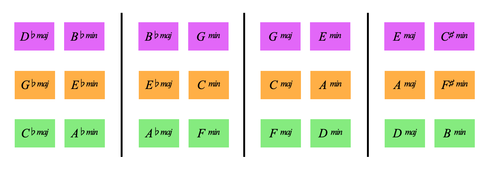

COLOURS:
Secondary colours = major and minor triads
Learning outcome: major and minor chords are orange, green or purple
How does this work?
The 3 notes of a C major triad (C, E, G) are yellow, red and red respectivly
We think of this entire chord as orange, because its notes are a mixture of yellow and red

C minor is also orange
the foundation of tonal harmony and harmonic stability
Ok,
All major and minor chords built on yellow root notes are orange
Heres a Gb minor triad with the 5th in the bass, it's orange.
Seeing this on guitar really helps, play a barre chord and move it 3 frets at a time to traverse the respective colour family
So, if we ascend major or minor triads in semitones we get orange, purple, green, orange, purple, green etc:
Do you feel comfortable that major and minor chords related by minor 3rds have the same colour?

Each of the 6 colours represents either notes or chords related by minor 3rds
Before we move onto the why of these colours, we need to introduce this chart,
It holds all 12 major and all 12 minor chords showing certain relationships and groupings
The chart is a flattened out hypercube:
Which we'll unpack in the Geometry section
GeometryWe have major chords related by minor 3rds:
We have minor chords related by minor 3rds:
We have perfect 5ths going up and down:
We have relative minors next door within the lines:
And we have parallel minors next door across the lines:
We'll start to explore what this chart does in the next page: Harmonic Functions
But right now,
I think it's time for a break...
Back to Primaries | Break Time